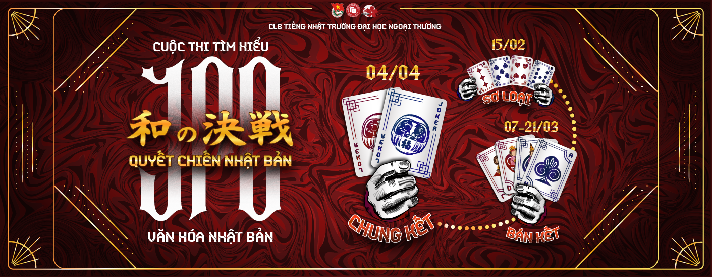

一
Văn hóa Nhật Bản
Từ những lăng kính văn hóa đa chiều đến các hoạt động giao lưu thú vị, JPC là nhịp cầu đưa vẻ đẹp truyền thống lẫn hiện đại của Nhật Bản hòa nhịp cùng sự năng động của sinh viên Ngoại Thương.
【 JPC FTU について 】
CLB Tiếng Nhật Trường Đại học Ngoại Thương (JPC FTU) là mái nhà chung gắn kết những tâm hồn yêu tiếng Nhật và đam mê nét đẹp văn hóa xứ Phù Tang suốt hơn hai thập kỷ qua.
Từ những lăng kính văn hóa đa chiều đến các hoạt động giao lưu thú vị, JPC là nhịp cầu đưa vẻ đẹp truyền thống lẫn hiện đại của Nhật Bản hòa nhịp cùng sự năng động của sinh viên Ngoại Thương.
Một tập thể bền chặt, nơi các thành viên không chỉ sẻ chia đam mê về Nhật Bản mà còn cùng nhau mài giũa chuyên môn, hỗ trợ nhau phát triển toàn diện trong những năm tháng đại học.
Là nơi biến ý tưởng thành hiện thực qua chuỗi sự kiện, dự án nổi bật như Nhật Bản trong tôi là.... JPC mang đến môi trường làm việc chuyên nghiệp để mỗi cá nhân được thỏa sức bùng nổ đam mê và cống hiến hết mình.
BAN TỔ CHỨC — PLANNING & LOGISTICS
企画部
Ban Tổ chức là xương sống vận hành của mọi chương trình lớn tại JPC FTU — nơi biến những ý tưởng táo bạo thành kế hoạch hành động chi tiết, quản lý ngân sách, chuẩn bị hậu cần chu đáo và điều phối nguồn lực để kiến tạo nên những sự kiện chỉn chu và bùng nổ nhất.
Lên kịch bản tổng thể (Master Plan), quản lý timeline từng phút và điều phối sự phối hợp nhịp nhàng giữa các ban trong ngày diễn ra chương trình.
Quản lý kho đạo cụ, bài trí không gian sự kiện đậm chất Nhật Bản, tiền trạm địa điểm và xây dựng phương án dự phòng cho mọi tình huống phát sinh.
Lập dự trù ngân sách chi tiết cho từng sự kiện, kiểm soát dòng tiền hoạt động của CLB và thực hiện quyết toán minh bạch, chuẩn xác.
BAN CHUYÊN MÔN — ACADEMIC & CULTURE
専門部
Ban Chuyên môn là trí tuệ và linh hồn học thuật của JPC FTU — nơi quy tụ những người yêu tiếng Nhật sâu sắc, phụ trách nội dung kiến thức, tổ chức các lớp học bổ ích và lan tỏa những giá trị văn hóa truyền thống nguyên bản của xứ sở Phù Tang.
Phụ trách các lớp học tiếng Nhật nội bộ (Kaiwa giao tiếp, Kanji, ngữ pháp JLPT N3-N2), biên soạn cẩm nang học tập bổ ích và giải đáp thắc mắc cho hội viên.
Nghiên cứu chuyên sâu phong tục tập quán Nhật Bản; thiết kế các workshop truyền thống đặc sắc: Trà đạo (Sadou), Nghệ thuật gấp giấy (Origami), Thư pháp (Shodou).
Rèn luyện kỹ năng dịch thuật tài liệu, biên dịch nội dung song ngữ Nhật — Việt, tham gia phiên dịch hỗ trợ các sự kiện và điều phối những buổi giao lưu ngôn ngữ, văn hóa cùng khách mời người Nhật.
BAN THÔNG TIN — MEDIA & COMMUNICATIONS
情報部
Ban Thông tin là tiếng nói và diện mạo thẩm mỹ của JPC FTU — nơi biến những ý tưởng thành ngôn từ lay động, thiết kế thị giác đậm chất Phù Tang và lan tỏa hình ảnh CLB đến hàng chục nghìn sinh viên qua hệ thống kênh truyền thông đa nền tảng.
Lên kế hoạch nội dung truyền thông cho Fanpage, chấp bút các tuyến bài văn hóa, tin tức sự kiện và thông điệp tuyển quân giàu cảm xúc, bắt kịp xu hướng.
Định hình phong cách nhận diện hình ảnh (Key Visual), thiết kế bộ ấn phẩm truyền thông, poster, banner, avatar và merchandise độc quyền của CLB.
Bắt trọn từng khoảnh khắc đáng nhớ qua ống kính nhiếp ảnh, quay dựng video ngắn TikTok triệu view và sản xuất video recap sự kiện chuyên nghiệp.
BAN NHÂN SỰ — HUMAN RESOURCES
人事部
Ban Nhân sự là trái tim ấm áp giữ lửa yêu thương và thấu hiểu của đại gia đình JPC — nơi chăm lo từng thành viên, xây dựng văn hóa gắn kết, đào tạo kỹ năng mềm và đảm bảo mỗi cá nhân đều tìm thấy niềm vui, sự phát triển và tình bạn chân thành suốt những năm tháng thanh xuân.
Cháy hết mình với các tiết mục biểu diễn văn nghệ đặc sắc, khuấy động các sân khấu sự kiện và đem lại tiếng cười, niềm vui rạng rỡ cùng nguồn năng lượng tích cực cho đại gia đình JPC.
Tổ chức các hoạt động gắn kết tình cảm: sinh nhật hàng tháng, dã ngoại cắm trại thường niên, ngày hội gia đình JPC và các buổi bonding đầm ấm.
Theo dõi tiến độ tham gia của thành viên, tổ chức các buổi training kỹ năng mềm, lắng nghe tâm tư và định hướng phát triển cá nhân cho từng hội viên.
BAN ĐỐI NGOẠI — EXTERNAL RELATIONS
対外部
Ban Đối ngoại là đại sứ uy tín và gương mặt đại diện của JPC trước các đối tác — cầu nối vững chắc đưa thương hiệu CLB đến với các doanh nghiệp, trường đại học, nhà tài trợ, và các tổ chức khác.
Nghiên cứu đối tác, xây dựng hồ sơ mời tài trợ (Proposal) chuẩn quốc tế, đàm phán hợp đồng và bảo đảm quyền lợi hợp tác cho các sự kiện quy mô.
Thiết lập quan hệ với các chuyên gia Nhật Bản, nghệ nhân văn hóa, giảng viên uy tín và những người có tầm ảnh hưởng tham gia cố vấn, chia sẻ.
Duy trì mạng lưới cựu thành viên thành đạt (Alumni Network), tăng cường giao lưu hợp tác với các CLB tiếng Nhật trên cả nước và các tổ chức văn hóa.
Cùng nhìn lại một trong những sân chơi tiêu biểu của JPC — sự kiện quy tụ những người trẻ đam mê tìm hiểu văn hóa Nhật Bản.

Muốn không bỏ lỡ sự kiện tiếp theo? Theo dõi Fanpage và TikTok của JPC FTU ở cuối trang để cập nhật lịch mới nhất.
JPC đang tìm kiếm những gương mặt mới cho gia đình thế hệ 22. Không cần giỏi tiếng Nhật — chỉ cần bạn muốn học và muốn thuộc về một cộng đồng.
Điền form đăng ký trực tuyến với thông tin cơ bản & nguyện vọng chọn Ban.
Gặp gỡ, thảo luận nhóm để thể hiện cá tính, bản lĩnh và tinh thần đồng đội.
Thực chiến cùng đồng đội đến từ các Ban qua đề bài được giao.
Trò chuyện chuyên sâu cùng Trưởng - Phó Ban các ban chuyên trách.
Chào đón các gương mặt xuất sắc chính thức trở thành thế hệ Gen 22 của JPC - FTU!